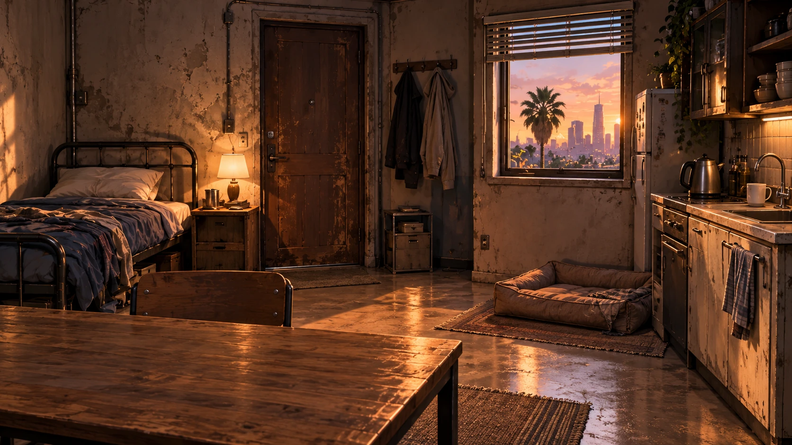

正在載入基地資源。若此提示持續顯示，請確認 index.html、game 檔、theme 檔與 assets 資料夾已一併上傳；不要重置存檔。
✧
末日宿舍
LAST DORM
／
188
v2.6.0
— : —
洛杉磯 · 當地時間
個人成長
Lv.2
75
生存幣
1
安全屋
建設
背包
個人數值
四大學院
任務
↻
Routine
烹飪
佈置
夥伴
休整
設定
✧
策策
v2.6.0
成長與生活
網站版 · 本機存檔／無付費 AI
任務與對話留在此瀏覽器，請保留 JSON 備份。
SAFEHOUSE / LOS ANGELES
廢墟裡，留一盞燈。
任務雷達
跟隨 LA 時間
自動
晨
日
夕
夜
LYDIA / 人物狀態
今日未回報
只依妳的紀錄，不從現在幾點猜測。
休整／氣色 →
僅預覽人物疲態，未保存、未扣分。
結束預覽
回到狀態面板

TIER
0
第 188 生存區
初始出租房 · 不因休息而降級
休整
探索
衣櫃
洛城
烹飪
學業主線
守衛行蹤
守衛行蹤載入中
互動提示
房間佈置
找德牧
左右滑動房間，查看另一側家具。
Lydia
Lv.2
倖存者 · 慢慢重建自己的生活
40 / 100 XP
策策 / SYSTEM
世界還沒修好，妳不用一次修完。先選一件值得做的小事。
打開系統助手 ↗
物品陳列架
背包・分解・兌換 →
談判者手札
2 篇草稿 · 尚待整理
516 期中與 TopHat
一章一個任務 · 做完再勾選
一小段專注
5 / 15 / 25 分鐘
基地
建設
背包
任務
更多
LAST DORM